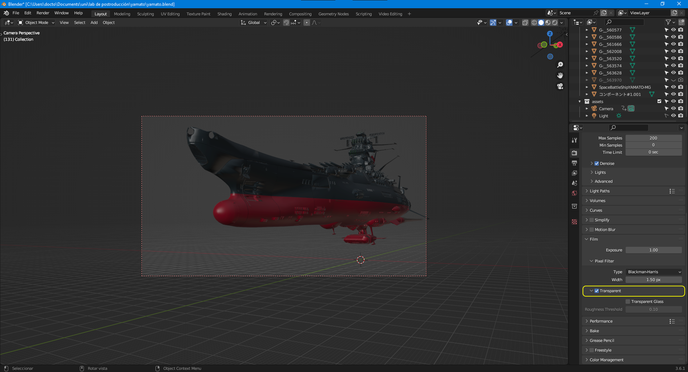

Laboratorio de postproducción
Sesión 01
- Datos de docente
- Calendario se encuentra en team
- Programa de estudios
- Reglamentación
- Syllabus
- Firma de Syllabus
- Premier
Recursos
Ayuda de premierCreative cloud students
Davinci Resolve plan b
Sesión 02
Preparación de posproducción
1.1 Agenda de procesos de post producción
1.2 Presupuestado de procesos de post producción
1.3 Formatos de imagen digital, cine y televisión (TV)
1.3.1 Sistemas de transmisión
1.3.2 Resolución de video
1.3.3 Relación de aspecto
1.4 Tipos y formatos de audio
• Frecuencias de muestreo de audio para cine y tv
1.5 Procesos de captura
Recursos
Blender emparentar cámara a objeto nuloCreación de bandera con Blender 2.9 (sin edición)
Sesión 03
2. Procesos de edición audio y video
2.1 El montaje cinematográfico
2.2 Edición offline o proceso editorial de video
2.3 Edición on-line
2.4 Edición de audio para procesos de postproducción audiovisual
Recursos
En portable apps tiene como herramienta de edición de audio AudacityEn el enlace anterior se deja la URL del sitio oficial
Una alternativa a Premier es Davinci Resolve
También dentro de nuestra herramienta favorita de 3d tenemos un editor de video blender
🔧 Terminar actividad de bandera en Blender ☑️
🔧 Pasar secuencia de animación a Premier ☑️
📷 Fotografias y video gratis Pexels
📷 Fotografias y video gratis Pixabay
📷 Fotografias y video gratis Freepik
📷 Fotografias y video gratis Unsplash
📷 Fotografias FreeImages
Sesión 04
3.Edición de video
3.1 Proyectos y secuencias
3.2 Importando medios
3.3 Uso de interfaz para edición de video
3.4 Uso de la línea de tiempo
3.4.1 Herramientas de la línea de tiempo
3.4.2 Uso y edición de fotogramas clave
3.5 Composición multicapa
3.5.1 Principio de la cámara multiplano
3.5.2 Uso de capas en tres dimensiones
3.5.3 Modos de fusión de capas en video
3.6 Uso de cámaras virtuales
3.7 Uso de luces virtuales
3.8 Pre-composición
Actividad en clase
☣️ Checar que tengan acceso los alumnos a la bitácora de calificaciones.S ☣️
Proyecto 01
✎ Apoyado con tu docente desarrolla la primer proyecto de edición de video usando premier los enlaces de los recursos se encuentra en team en documentos general materiales de clase sesión 04.
⚠️ Atención esta actividad se entrega a final de clase. ⚠️
Sesión 05
Nodos para crear entorno espacial

Para lograr en el renderizado que el fondo sea transparente usamos la siguiente opción:
En material de clase se encuentra el modelos en 3d del Yamato
En material del clase se encuentra el addon para importar .SKP de sketchup
Sesión 06
Examen
Sesion 07
Retroalimentación
Firma de Acta
Yamato crear secuencia
Audacity
LMMS
uso de LMMS aquí
Sesión 07
Retro y firma de actas
Sesión 08
Audios aqui
Sesión 09
Yamato secuencia integración audio y video
Generación de cuenta en gitHub y repositorio de audio
big bug bunny la historia
Entregable de clase
Sesión 10
Sesión 11
Sesión 12
Sesión 13
Sesión 14
Sesión 15
Sesión 16
Examen Tercer parcial..